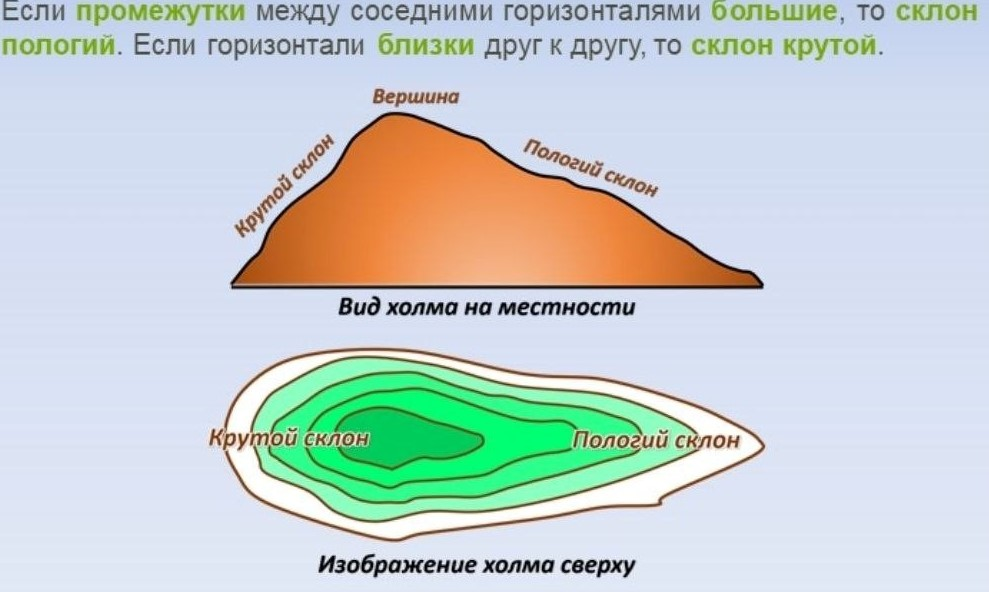

В данном задании потребуется проанализировать профиль рельефа местности.
Алгоритм 11 задания:
1. Найдем точки А и В
2.Соединим их линией
3.Определим высоту точки А (по линиям, горизонталям!)
4. Смотрим на профили.
5.Определяем высоту точки В.
6.Смотрим на профили.
